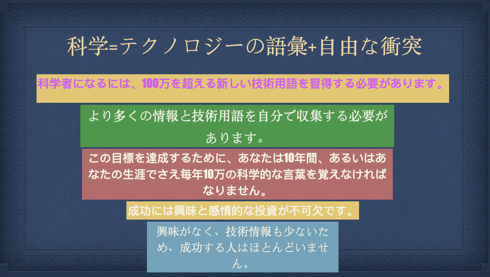
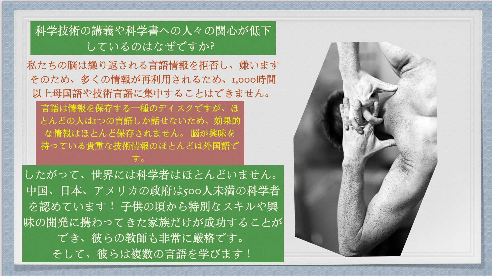

科学的成功への道~~
Sep20, 2020
外国語をマスターした後の素晴らしい効果。
100の外国語を流暢に習得した後、人間の脳はどうなりますか？ 1：学習への熱意と動機付け。言語は情報を保存するための一種のディスクであるため、100の外国語を習得した人は、一般の人の1,000倍以上の効果的な情報を保存し、強力な科学研究、革新、問題解決能力を備えています。第二に、非常に注意してください。外国語を学ぶには、奇妙な語彙を絶えず保存する必要があるため、外国語は物事の違いに非常に敏感です。第三に、高濃度。 5年以内に100の外国語をマスターしたいのなら、学習時間は非常にタイトです。 1日8時間以上続く高強度の精神的集中力が必要です。第四に、あなたの脳細胞の成長は普通の人の100倍になります。それは5000万から1億以上の新しい単語を保存します。あなたは世界中からあらゆる種類の貴重な科学的、技術的、経済的情報を収集する能力を持っています。普通の人の100倍賢い。
技術書を学ぶのに頑張れる人が少ないのはなぜですか？
Dec 20, 2020
外国語をマスターすることと科学者になることの関係
したがって、学ぶ外国語の種類が増え、収集する科学的および技術的情報が増えるほど、成功する科学的キャリアに近づくことができます。 したがって、最初に克服するのが難しいのは、100の外国語に堪能になる方法であり、それは科学的な外国語です。 あなたが毎日外国語を学び、それが外国の科学技術文書であるならば、あなたは10年以内に文明世界の科学または技術の専門家になるでしょう！ あなたは世界中から科学的および技術的な情報を読む能力を持っているからです。 10年間で吃音の外国語を学びたいですか、それとも5年間で100以上の外国語の方法を習得して、外国語のネイティブスピーカーになりたいですか？
私たちについては、WeChatブログのコンテンツをご覧ください
流利使用100种外语微信公众号，欢迎订阅每天新博客，分享外语和科技学习心得.「100の外国語で話された流暢さ」WeChatパブリックアカウント、外国語と技術学習の経験を共有するために毎日新しいブログを購読することを歓迎します。